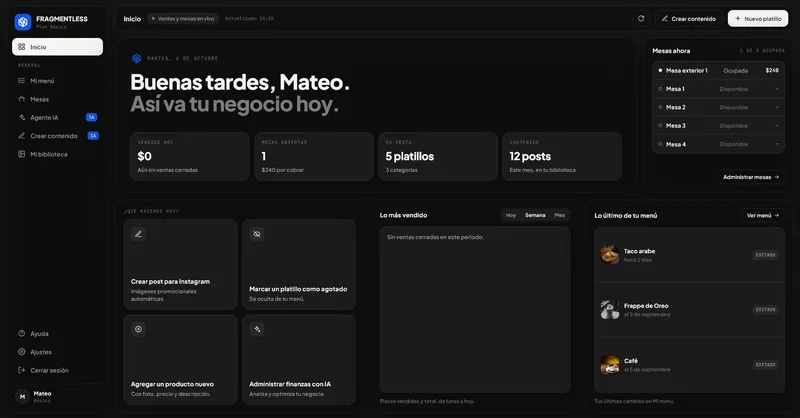
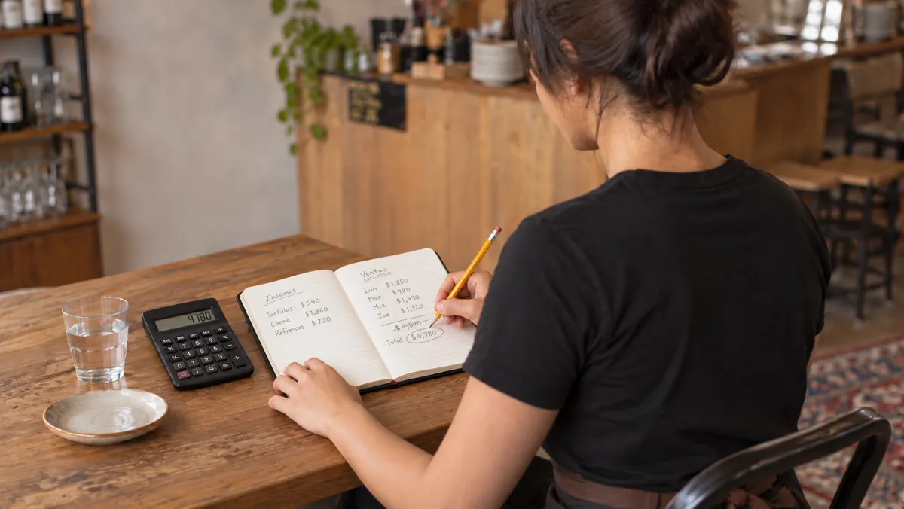
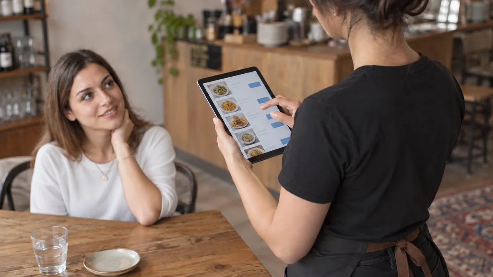
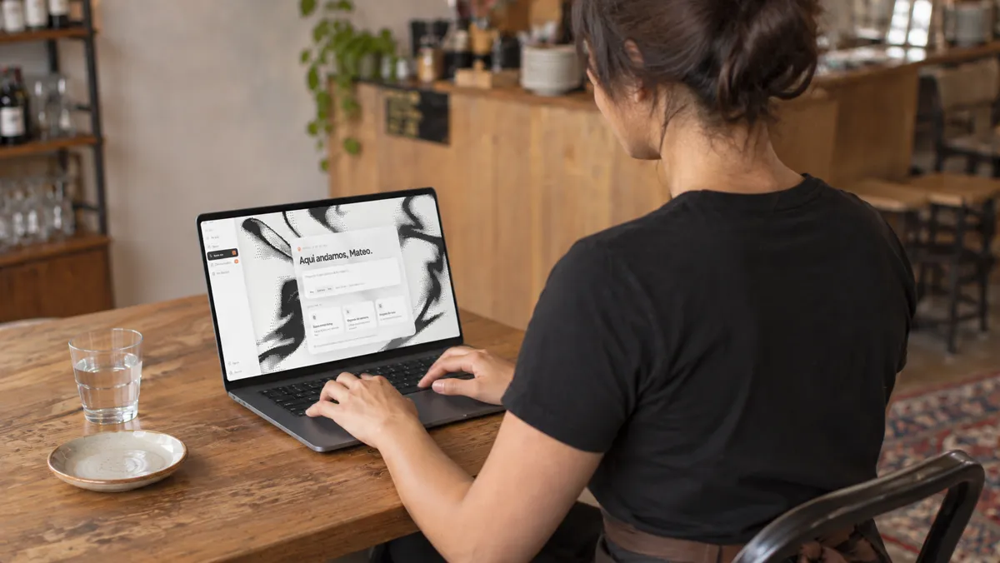

Un mundo sin piezas sueltas.
Creamos software para conectar ideas, simplificar procesos y abrir nuevas posibilidades.

Presentamos nuestro nuevo software.
El siguiente nivel para los restaurantes de México: un solo sistema, sin piezas sueltas, con inteligencia artificial.
Todo tu restaurante   
Todo conectado.